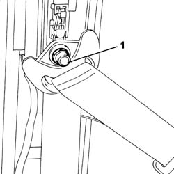
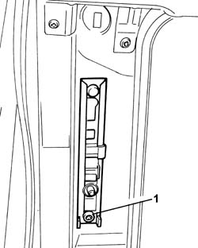
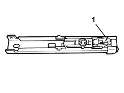

7065A18 FRONT SEAT BELT HEIGHT ADJUSTMENT (ONE), LEFT OR RIGHT - R.R.
- Path
- Procedures > 70 FITTINGS > 7065 SAFETY BELTS AND ACCESSORIES > 7065A FRONT SAFETY BELTS > 7065A18 FRONT SEAT BELT HEIGHT ADJUSTMENT (ONE), LEFT OR RIGHT - R.R.
- Kind
- repair procedure (removal / refitting; the operation number is the code)
- Applies to
- all engines; all production periods
- Interactive page
- https://sloeber94.github.io/elrnDB-fUlss/en/#/179007940
Applies to: all engines; all production periods
 Removing
Removing
 Refitting
RefittingSee
Op. 5530B56 BATTERY DRIP TRAY COVER - R.R.
Disconnect the negative battery terminal.
See
Op. 7065C30 GRAB HANDLE (ONE) LEFT, RIGHT OR CENTRE PASSENGER COMPARTMENT INTERIOR - R.R
Access to the rear seats
See
Op. 7040H38 CENTRE PILLAR UPPER ELEMENT (ONE), LEFT OR RIGHT - R.R
Move the front seat completely forwards.
1. Undo the upper bolt fixing the seat belt to the centre pillar.

Applies to: all engines; all production periods
Move the upper part of the seat belt away from the work area.
1. Undo the bolt fixing the seat belt height adjuster to the centre pillar.

Applies to: all engines; all production periods
1. Remove the seat belt height adjuster.

Applies to: all engines; all production periods
Refitting
RemovingPosition the seat belt height adjuster, centering it on the pin.
Tighten the seat belt height adjuster fixing bolt to torque.
Component | Fastening | dia | Value daNm |
|---|---|---|---|
Seat belt height adjuster | Bolt | 3.0 |
Reposition the upper part of the seat belt.
Tighten the upper bolt fixing the seat belt to the centre pillar to torque.
Component | Fastening | dia | Value daNm |
|---|---|---|---|
Upper seat belt fastening | Bolt | 3.0 |
Restore the seat position.
See
Op. 7040H38 CENTRE PILLAR UPPER ELEMENT (ONE), LEFT OR RIGHT - R.R
See
Op. 7065C30 GRAB HANDLE (ONE) LEFT, RIGHT OR CENTRE PASSENGER COMPARTMENT INTERIOR - R.R
Access to the rear seats
Connect the negative battery terminal.
See
Topics linked from this page (3)
- 5530B56 BATTERY DRIP TRAY COVER - R.R.
- 7040H38 CENTRAL PILLAR UPPER ELEMENT - R R
- 7065C30 INTERIOR L/H OR R/H GRAB HANDLE (ONE) - R+R